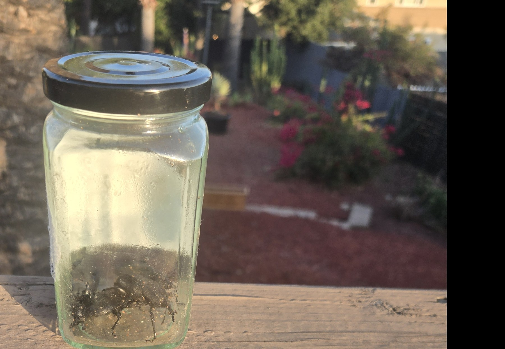
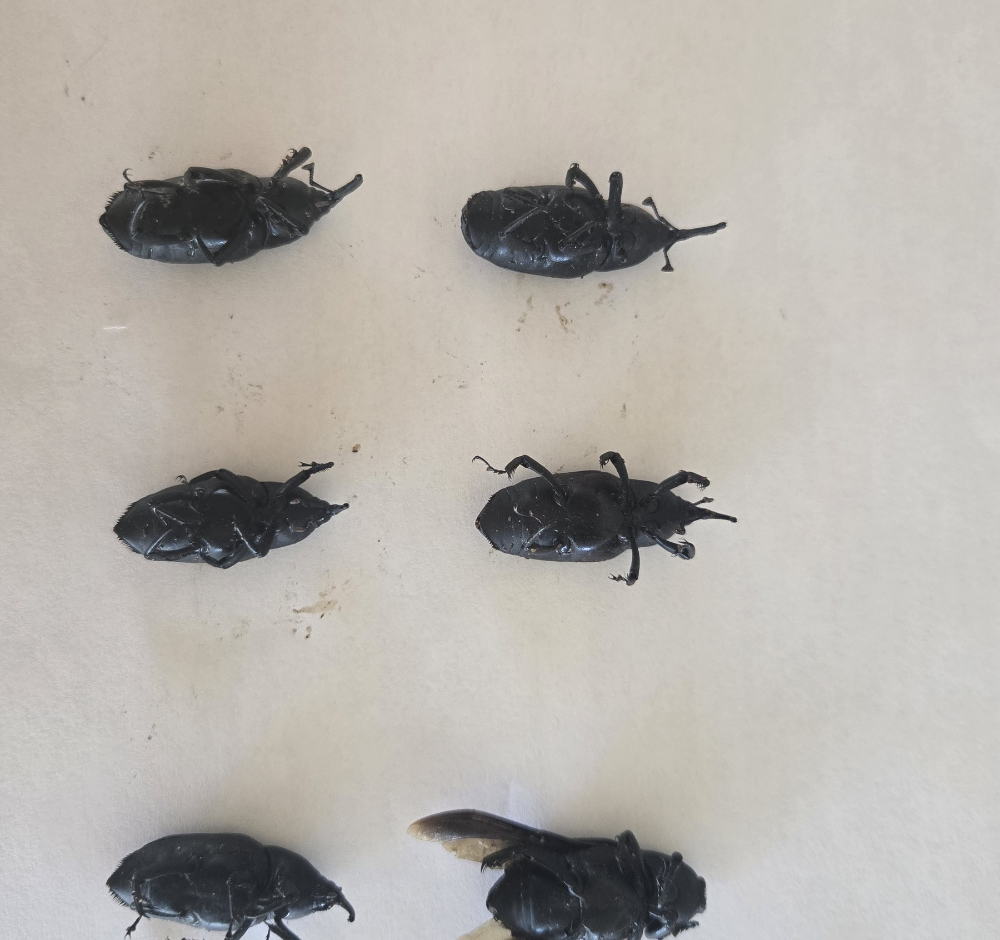
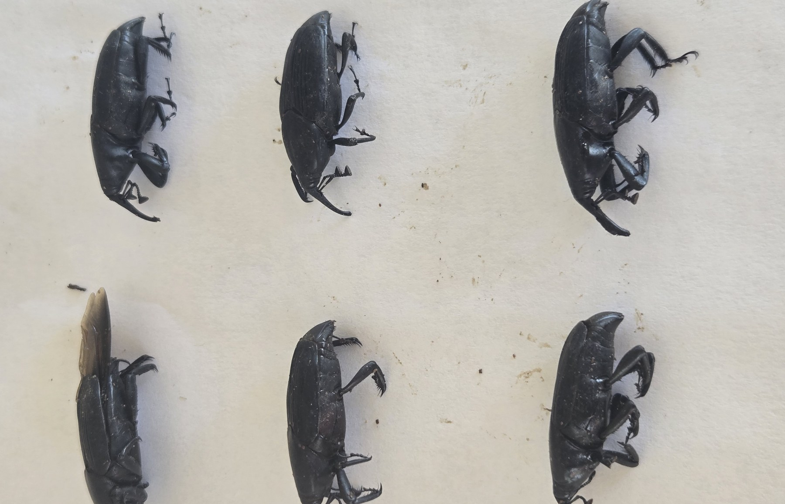

On June 15, 2026, I photographed an adult South American palm weevil after capturing it at my own property in Old Escondido. At 5:39 p.m., I made the first dated specimen image. By 7:07 p.m., captured adults were in a clear jar and I made a second record.


The next morning, June 16, I photographed six captured adults together from two angles. The original dated files and their SHA-256 records are preserved in SDPP’s internal evidence record. They establish an owner-documented local capture record; they are not a laboratory or independent entomologist determination.


Eleven days later, on June 26, I saw an adult walking up the trunk of my declining mature Canary Island date palm. I recorded it on video and captured it afterward. The video records the adult I observed on my palm. Photographs of the palm’s decline provide condition context, but decline in a photograph does not by itself establish SAPW.
Visual description: an adult South American palm weevil walks across the textured lower trunk in late-day light. The 12-second public excerpt is tightly cropped, has no audio, and excludes the exact residential address.
The sequence matters because it is local, dated, and connected: captured adults on June 15 and 16, then an adult observed on the palm’s trunk on June 26. It does not establish that any neighboring palm was infested, and it should not be generalized into a diagnosis of other declining palms.
SDPP is not currently offering pesticide applications. A useful palm record starts before the evidence becomes dramatic: one full-palm view, a repeatable crown angle, trunk detail, the date, and a note of what changed. If you have a mature Canary Island date palm and an unusual observation to document, use Report a Palm or request a private documentation assessment.